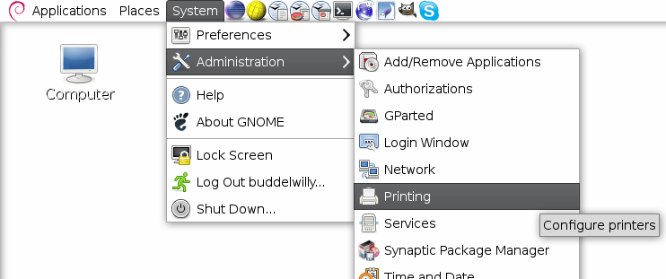

Printer-system-config-printer
Bevor du mit der Anleitung fortfährst, stelle sicher dass du die aktuellen Treiber gemäss Printer-Driver heruntergeladen hast.
Diese Anleitung richtet sich an GNOME Benutzer.
Die Anleitung funktioniert aber auch mit KDE (Kubuntu 12.04). Die Dialoge sehen ziemlich ähnlich aus.
Allgemeine Schritte
Öffne als erstes die Druckerkonfiguration über das GNOME Menu (System --> Administration --> Printing) (benötigt root Berechtigung) 
{kind=link}
Alternativ kann man die Druckerkonfiguration auch über Kommandozeile mit folgendem Befehl öffnen:
# system-config-printer
Füge nun einen neuen Drucker hinzu indem du den "New" Knopf auswählst.
{kind=link}
iR ADV 8085 Installation
Aktuelle Geräteadresse (nicht die vom Screenshot übernehmen):
smb://HSR/sid00771.hsr.ch/MFP-BW
Es erscheint ein neues Fenster. Wir wollen einen "Windows Printer via SAMBA" hinzufügen. Gib die Geräteaddresse ein und achte darauf dass du deine Benutzerangaben in der Authentifizierung richtig eingibst.

Nachdem du die Angaben mit "Verify" überprüft hast gehe zur Auswahl des Druckertreibers indem du auf "Forward" klickst. Wähle Canon als Marke aus.
{kind=link}
Ein weiter Klick auf "Forward" bringt dich zur Auswahl des spezifischen Druckers. Wähle iR-7086-7105 aus.
{kind=link}
Klicke erneut auf "Forward" um zu den weitern Druckereinstellungen zu gelangen. In diesem Schritt müssen noch HSR-Spezifische Einstellungen für den Drucker vorgenommen werden:
{kind=link}
Als nächstes kann man noch den Druckernamen und optional die Beschreibung und den Standort festlegen. Nachdem diese Einstellungen vorgenommen sind auf "Apply" drücken und der Drucker sollte funktionieren.
iR ADV C7055 Installation
Die Installation ist ähnlich wie beim iR ADV 8085, allerdings muss am Ende noch ausdrücklich auf COLOR umgestellt werden.
Aktuelle Geräteadresse (nicht die vom Screenshot übernehmen):
smb://HSR/sid00771.hsr.ch/MFP-COLOR
Es erscheint ein neues Fenster. Wir wollen einen "Windows Printer via SAMBA" hinzufügen. Gib die Geräteaddresse ein und achte darauf dass du deine Benutzerangaben in der Authentifizierung richtig eingibst.
{kind=link}
Nachdem du die Angaben mit "Verify" überprüft hast gehe zur Auswahl des Druckertreibers indem du auf "Forward" klickst. Wähle Canon als Marke aus.
{kind=link}
Ein weiter Klick auf "Forward" bringt dich zur Auswahl des spezifischen Druckers. Wähle iR-7086-7105 aus.
{kind=link}
Klicke erneut auf "Forward" um zu den weitern Druckereinstellungen zu gelangen. In diesem Schritt müssen noch HSR-Spezifische Einstellungen für den Drucker vorgenommen werden:

Als nächstes kann man noch den Druckernamen und optional die Beschreibung und den Standort festlegen. Nachdem diese Einstellungen vorgenommen sind auf "Apply" drücken. Anschliessend muss unter "Einstellungen" noch auf "Colour" umgeschaltet werden.
{kind=link}
Jetzt sollte der Drucker farbig drucken.